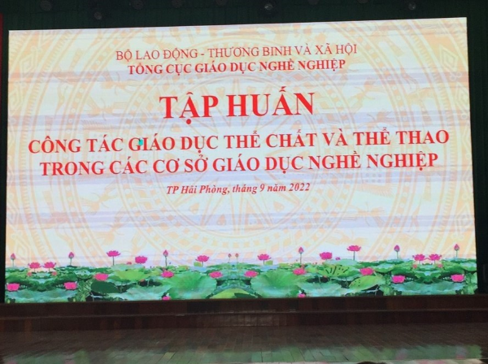
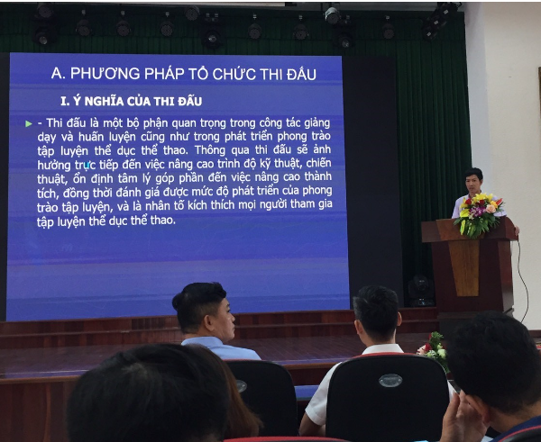

TẬP HUẤN CÔNG TÁC GIÁO DỤC THỂ CHẤT VÀ THỂ THAO TRONG CÁC CƠ SỞ GIÁO DỤC NGHỀ NGHIỆP NĂM 2022
Thực hiện Văn bản số 1775/TCGDNN-HSSV, ngày 26 tháng 8 năm 2022 của Tổng cục Giáo dục nghề nghiệp, Bộ Lao động - Thương binh và Xã hội về việc tổ chức tập huấn nâng cao chất lượng, hiệu quả giáo dục thể chất và thể thao trường học trong các cơ sở giáo dục nghề nghiệp từ ngày 08 đến ngày 09 thắng 9 năm 2022 tại Trường Cao đẳng Y tế Hải Phòng số 169 Trần Nguyên Hãn, Quận Lê Chân, Hải Phòng.
Trường Cao đẳng Kinh tế - Kỹ thuật Vĩnh Phúc đã cử 02 cán bộ tham gia tập huấn gồm: ThS. Nguyễn Ánh Điện Trưởng phòng Công tác HSSV, ThS. Trần Ngọc Tú Tổ trưởng tổ GDTC- QPAN cùng gần 200 cán bộ đến từ các cơ sở giáo dục nghề nghiệp trên toàn quốc.
Trong đợt tập huấn này, các đại biểu đã được hướng dẫn nghiên cứu và tìm hiểu các chuyên đề về: Đổi mới phương pháp dạy học môn GDTC cho giáo viên, giảng viên dạy GDTC và thể thao trường học trong các cơ sở giáo dục nghề nghiệp. Đổi mới nội dung kiểm tra, đánh giá môn học GDTC. Phương pháp tổ chức thi đấu nghiệp dư. Cập nhật các kiến thức, kỹ năng mới về trọng tài thể thao nghiệp dư. Sau hai ngày tham dự Hội nghị tập huấn công tác nâng cao chất lượng, hiệu quả giáo dục thể chất và thể thao trường học trong các cơ sở giáo dục nghề nghiệp, các đại biểu đã tiếp thu được nhiều kiến thức mới bổ ích để bổ sung vào chương trình học tập cho HSSV tại Trường Cao đẳng Kinh tế - Kỹ thuật Vĩnh Phúc và các cơ sở giáo dục nghề nghiệp trong năm học 2022 - 2023.
Dưới đây là một số hình ảnh hoạt động của Hội nghị tập huấn:
